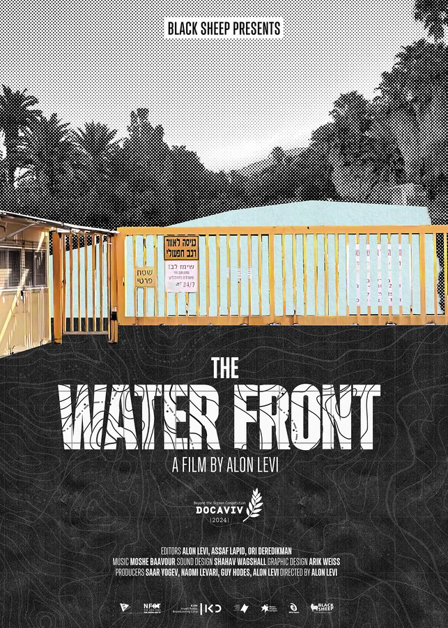
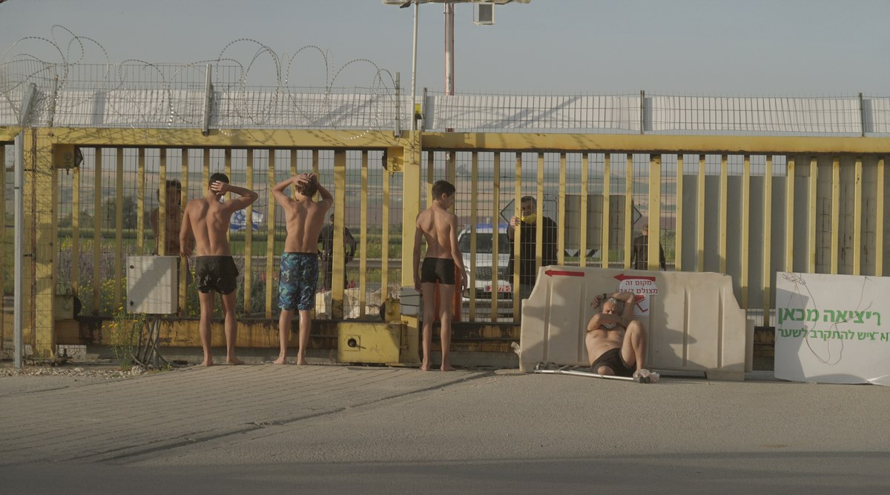
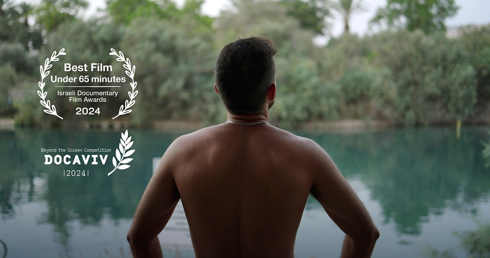

נגן טריילר
קו המים
תיעודי באורך מלא 65 דקות | 2024 כאן 11
בחום הלוהט של עמק בית שאן, קבוצת פעילים נאבקת על זכות הציבור לגישה למשאב טבע ציבורי. דרישתם היא אחת: לפתוח את שערי קיבוץ ניר דוד על מנת שכולם יוכלו ליהנות ממימי נחל האסי הזורם דרכו, כפי שהחוק מאפשר. מהצד השני של השער – חברי הקיבוץ שחוששים משינוי ומפגיעה במרקם חייהם. במאי הסרט מתלווה אל הפעילים ומתעד מקרוב את המחאה המחריפה בשטח, בבתי המשפט ובשיח הציבורי. המאבק העיקש מעלה שאלות על שוויון, חוק וצדק חלוקתי שחורגות הרבה מעבר לגבולות העמק.



קרדיטים
עורך
אלון לוי, אסף לפיד, אורי
מוזיקה מקורית
משה בעבור